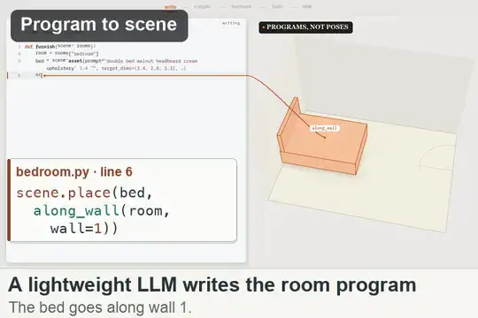

ScenePress: Fast, Low-Cost, Simulation-Ready Indoor Worlds from Lightweight LLMs
Manuscript, 2026

Lightweight language models write high-level scene programs. A compiler checks layouts and builds articulated assets, turning those programs into varied indoor worlds for embodied simulation.